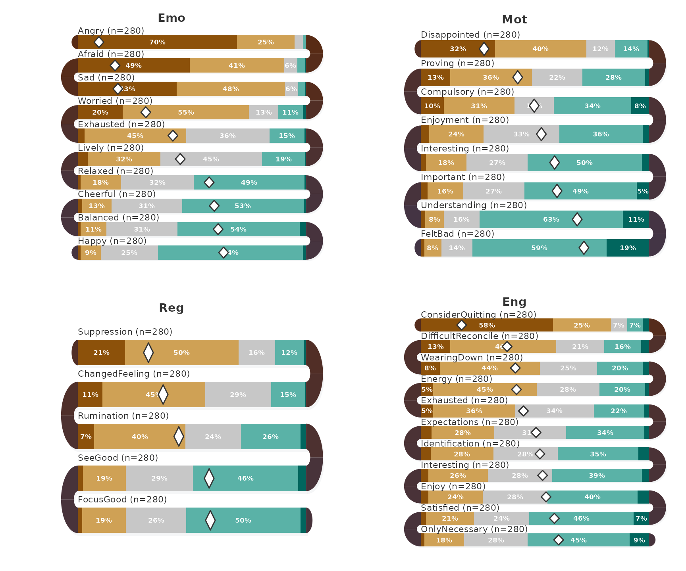
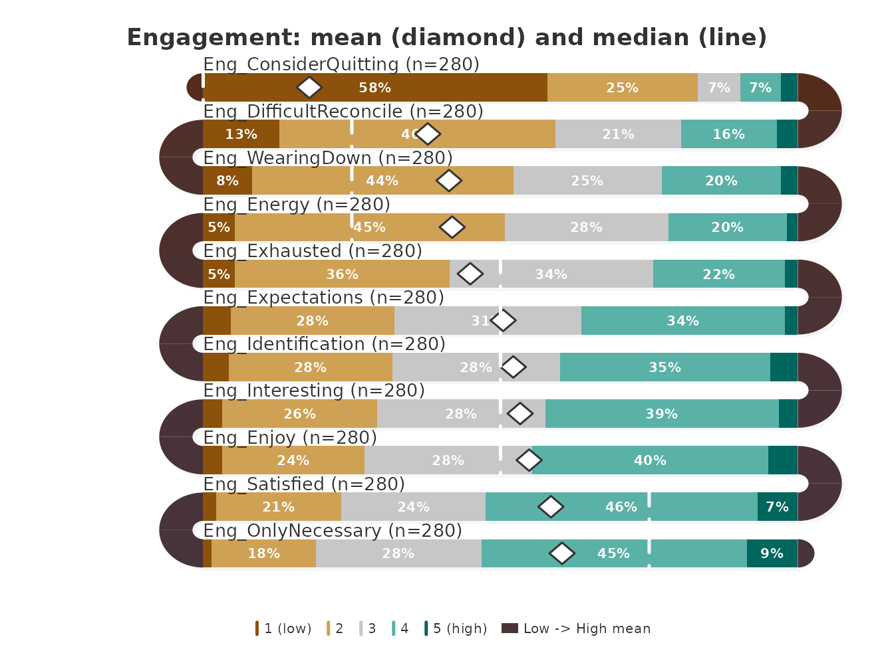
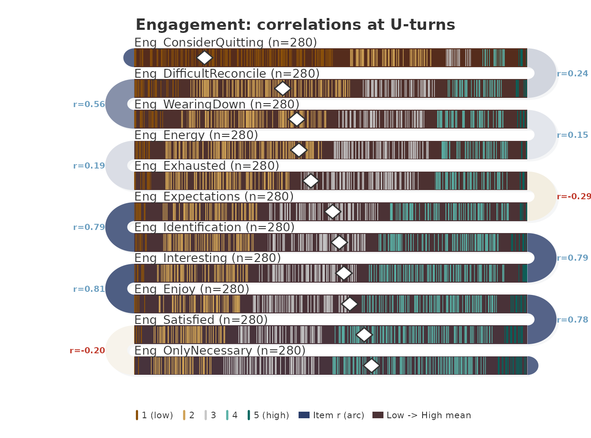

Case study: a multi-construct student survey
Written by Mohammed Saqr and Sonsoles López-Pernas
Source:vignettes/articles/case-student-survey.Rmd
case-student-survey.RmdA survey that measures several constructs with several items each poses two questions at once: how the respondents answered each item, and how the items relate to the construct they are meant to measure. The usual displays answer one question at a time. A stacked bar chart of 34 items shows the response distributions but not which items belong together or move together; a correlation matrix shows the associations but not the distributions. A snake plot with one panel per construct keeps the items of a construct together, orders them by their level of endorsement, and can print the correlation between neighbouring items at the U-turn that joins them.
This case study describes a 34-item student survey with four
constructs. It first gives an overview of all constructs, then asks
which engagement items are most and least endorsed and whether the
ordering criterion matters, where the mean and the median of an item
part ways, and which engagement items vary together across students. The
plots are drawn with survey_snake(); the numbers behind
them are computed alongside.
Data
student_survey holds the person-level scores of 280
university students from an experience sampling study (Neubauer &
Schmiedek, 2024; data CC-BY 4.0 at https://osf.io/bhq3p). Each score is the student’s mean
over the study, rounded to a 1–5 scale (rescaled from the original 1–7).
The column names carry the construct as a prefix:
- Respondent: one row per student.
-
Emotions:
Emo_— 10 items, such asEmo_HappyandEmo_Worried. -
Study motivation:
Mot_— 8 items, such asMot_InterestingandMot_Compulsory. -
Emotion regulation:
Reg_— 5 items, such asReg_RuminationandReg_Suppression. -
Study engagement:
Eng_— 11 items, such asEng_EnjoyandEng_ConsiderQuitting.
dim(student_survey)
#> [1] 280 34
table(construct = sub("_.*", "", names(student_survey)))
#> construct
#> Emo Eng Mot Reg
#> 10 11 8 5
scale_labels <- c("1" = "1 (low)", "2" = "2", "3" = "3", "4" = "4",
"5" = "5 (high)")The data hold 280 students and 34 items: 10 emotion, 11 engagement, 8
motivation and 5 regulation items. The items are named by their content
(for example Eng_ConsiderQuitting); the wording of each
item is in the original study’s codebook, so the interpretation below
stays with the item names.
The summary table below gives, for every item, its construct, mean, median and net score (the share of responses above the scale midpoint of 3 minus the share below it). It is the numerical counterpart of the plots that follow.
item_summary <- data.frame(
construct = sub("_.*", "", names(student_survey)),
item = sub("^(Emo|Mot|Reg|Eng)_", "", names(student_survey)),
mean = colMeans(student_survey),
median = vapply(student_survey, median, numeric(1)),
net = colMeans(student_survey > 3) - colMeans(student_survey < 3),
row.names = NULL
)
sort_by(item_summary, ~ construct + mean)
#> construct item mean median net
#> 9 Emo Angry 1.37 1 -0.93571
#> 2 Emo Afraid 1.65 2 -0.86429
#> 3 Emo Sad 1.70 2 -0.87143
#> 7 Emo Worried 2.19 2 -0.62857
#> 5 Emo Exhausted 2.66 3 -0.31429
#> 8 Emo Lively 2.79 3 -0.16786
#> 10 Emo Relaxed 3.30 3 0.30357
#> 6 Emo Cheerful 3.39 4 0.39643
#> 4 Emo Balanced 3.46 4 0.43929
#> 1 Emo Happy 3.55 4 0.55000
#> 34 Eng ConsiderQuitting 1.71 1 -0.73571
#> 27 Eng DifficultReconcile 2.51 2 -0.39643
#> 25 Eng WearingDown 2.65 2 -0.29286
#> 31 Eng Energy 2.67 2 -0.28929
#> 29 Eng Exhausted 2.80 3 -0.17143
#> 33 Eng Expectations 3.02 3 0.04286
#> 32 Eng Identification 3.09 3 0.08214
#> 28 Eng Interesting 3.13 3 0.13214
#> 24 Eng Enjoy 3.19 3 0.17500
#> 26 Eng Satisfied 3.34 4 0.29286
#> 30 Eng OnlyNecessary 3.41 4 0.34286
#> 11 Mot Disappointed 2.11 2 -0.57500
#> 16 Mot Proving 2.70 3 -0.19286
#> 15 Mot Compulsory 2.99 3 0.00714
#> 18 Mot Enjoyment 3.11 3 0.11786
#> 14 Mot Interesting 3.34 4 0.33214
#> 13 Mot Important 3.39 4 0.36071
#> 17 Mot Understanding 3.74 4 0.64286
#> 12 Mot FeltBad 3.86 4 0.68571
#> 21 Reg Suppression 2.24 2 -0.56786
#> 22 Reg ChangedFeeling 2.49 2 -0.40357
#> 23 Reg Rumination 2.77 3 -0.18571
#> 19 Reg SeeGood 3.30 3 0.28571
#> 20 Reg FocusGood 3.32 4 0.31429An overview of the four constructs
The first question is how the four constructs compare: which have items with high endorsement, and how spread out are the item means within a construct? The range of item means per construct:
aggregate(mean ~ construct, data = item_summary, FUN = range)
#> construct mean.1 mean.2
#> 1 Emo 1.37 3.55
#> 2 Eng 1.71 3.41
#> 3 Mot 2.11 3.86
#> 4 Reg 2.24 3.32The emotion items have the widest range of means, from 1.37
(Angry) to 3.55 (Happy): the construct mixes
rarely felt negative emotions with commonly felt positive ones. The
motivation items range from 2.11 to 3.86 and the engagement items from
1.71 to 3.41. The regulation items have the narrowest range, from 2.24
to 3.32.
With facet = TRUE, survey_snake() groups
the columns by the prefix before the underscore, draws one panel per
group, and removes the prefix from the item labels.
sort_by = "mean" orders the items of each panel by
ascending mean, so every panel runs from its least to its most endorsed
item.
survey_snake(student_survey, facet = TRUE, facet_ncol = 2L,
tick_shape = "bar", sort_by = "mean",
colors = snake_palette("earth", n = 5),
level_labels = scale_labels)
Each band is one item, drawn as a stacked bar of the percentage of
students at each level, with the percentage written in segments wide
enough to hold it; the diamond marks the item mean. The first band of
each panel is the item with the lowest mean in the table above
(Angry, Disappointed,
Suppression, ConsiderQuitting) and the last
band the item with the highest (Happy,
FeltBad, FocusGood,
OnlyNecessary).
Which engagement items are endorsed most and least?
The engagement construct has the most items (11), and the following questions use it. The items sorted by mean, with the net score alongside:
engagement <- subset(student_survey, select = Eng_Enjoy:Eng_ConsiderQuitting)
sort_by(subset(item_summary, construct == "Eng"), ~ mean)
#> construct item mean median net
#> 34 Eng ConsiderQuitting 1.71 1 -0.7357
#> 27 Eng DifficultReconcile 2.51 2 -0.3964
#> 25 Eng WearingDown 2.65 2 -0.2929
#> 31 Eng Energy 2.67 2 -0.2893
#> 29 Eng Exhausted 2.80 3 -0.1714
#> 33 Eng Expectations 3.02 3 0.0429
#> 32 Eng Identification 3.09 3 0.0821
#> 28 Eng Interesting 3.13 3 0.1321
#> 24 Eng Enjoy 3.19 3 0.1750
#> 26 Eng Satisfied 3.34 4 0.2929
#> 30 Eng OnlyNecessary 3.41 4 0.3429ConsiderQuitting has by far the lowest mean (1.71) and
net score (−0.736): far more students are below the midpoint than above
it. DifficultReconcile (2.51), WearingDown
(2.65) and Energy (2.67) follow. At the top are
OnlyNecessary (3.41), Satisfied (3.34) and
Enjoy (3.19). The net score increases in the same order as
the mean, so for these items sort_by = "net" and
sort_by = "mean" produce the same bands; the closest pair,
WearingDown and Energy, differs by 0.004 in
net score (−0.293 against −0.289). The two criteria can only disagree
for items whose means are close, as the emotion items
Afraid and Sad do in the palettes and layout guide.
Where do the mean and the median part ways?
An item mean is a fair summary of a symmetric distribution but not of a skewed one. The question is which items have a median at least half a scale point away from their mean:
subset(item_summary, abs(mean - median) >= 0.5)
#> construct item mean median net
#> 4 Emo Balanced 3.46 4 0.439
#> 6 Emo Cheerful 3.39 4 0.396
#> 13 Mot Important 3.39 4 0.361
#> 14 Mot Interesting 3.34 4 0.332
#> 20 Reg FocusGood 3.32 4 0.314
#> 25 Eng WearingDown 2.65 2 -0.293
#> 26 Eng Satisfied 3.34 4 0.293
#> 27 Eng DifficultReconcile 2.51 2 -0.396
#> 30 Eng OnlyNecessary 3.41 4 0.343
#> 31 Eng Energy 2.67 2 -0.289
#> 34 Eng ConsiderQuitting 1.71 1 -0.736Eleven items meet the criterion. In seven of them the median of 4
lies above the mean (for example Satisfied, mean 3.34, and
OnlyNecessary, mean 3.41): the typical student answers 4,
and the mean is pulled down by students at the lower levels. In the
other four, all engagement items, the median lies below the mean:
DifficultReconcile, WearingDown and
Energy have a median of 2 and means between 2.51 and 2.67,
and ConsiderQuitting has a median of 1 and a mean of 1.71.
For these items the typical student is at the low end and the mean is
pulled up by a minority at the higher levels. Six of the eleven items
belong to the engagement construct.
show_median = TRUE adds a vertical line at the item
median to the mean diamond. On the engagement items:
survey_snake(engagement, tick_shape = "bar", sort_by = "mean",
show_mean = TRUE, show_median = TRUE,
colors = snake_palette("earth", n = 5),
level_labels = scale_labels,
title = "Engagement: mean (diamond) and median (line)")
The diamond marks the mean and the dashed line the median of each
item. Both markers are placed on the response scale, which runs from
level 1 at the left end of the band to level 5 at the right end, so one
scale point is a quarter of the band width; they are not tied to the
stacked segments, whose widths are percentages. The horizontal distance
between the two markers is therefore the difference between mean and
median: 0.71 scale points for ConsiderQuitting, between 0.5
and 0.7 for the other five engagement items in the table above, and less
than half a point for the remaining five. A reader who sees only the
diamond on ConsiderQuitting would place the typical student
between levels 1 and 2; the median places that student at level 1.
Which engagement items vary together?
The last question concerns associations: do students who endorse one
engagement item also endorse its neighbour?
arc_fill = "correlation" computes the Pearson correlation
between each pair of adjacent items across the students who answered
both, prints it at the U-turn that joins them, and tints the arc by its
sign (arc_color for positive, its complement for negative)
and strength. Because the correlation pairs each student’s answer to one
item with the same student’s answer to the next, it needs the raw
responses, one row per student; survey_snake() refuses a
table of counts for this fill. The plot returns its layout invisibly,
and the correlations it printed are returned by
as.data.frame() with
what = "correlations".
engagement_layout <- survey_snake(engagement, tick_shape = "line",
arc_fill = "correlation", sort_by = "mean",
colors = snake_palette("earth", n = 5),
level_labels = scale_labels,
title = "Engagement: correlations at U-turns")
as.data.frame(engagement_layout, what = "correlations")
#> from to r n
#> 1 Eng_ConsiderQuitting Eng_DifficultReconcile 0.237 280
#> 2 Eng_DifficultReconcile Eng_WearingDown 0.562 280
#> 3 Eng_WearingDown Eng_Energy 0.153 280
#> 4 Eng_Energy Eng_Exhausted 0.194 280
#> 5 Eng_Exhausted Eng_Expectations -0.293 280
#> 6 Eng_Expectations Eng_Identification 0.787 280
#> 7 Eng_Identification Eng_Interesting 0.786 280
#> 8 Eng_Interesting Eng_Enjoy 0.808 280
#> 9 Eng_Enjoy Eng_Satisfied 0.780 280
#> 10 Eng_Satisfied Eng_OnlyNecessary -0.205 280Each band is one item, sorted by mean, with one tick per student in
the zone of the student’s response level; the number at each U-turn is
the correlation r between the two items it joins, computed
over n students. All ten correlations use the 280 students.
The upper half of the order forms a strongly correlated chain:
Expectations, Identification,
Interesting, Enjoy and Satisfied
correlate between 0.78 and 0.81 with their neighbours. Two U-turns carry
negative correlations, Exhausted with
Expectations (−0.293) and Satisfied with
OnlyNecessary (−0.205), and the arcs there take the
complementary tint. The weakest positive links are
WearingDown with Energy (0.153) and
Energy with Exhausted (0.194).
The arcs report only adjacent pairs, and the order by mean is not
chosen to place related items next to each other.
WearingDown and Exhausted are separated by
Energy in this order; their correlation, computed
directly:
At 0.72 it is far stronger than either of their correlations with
Energy, which sits between them only because its mean
(2.67) falls between theirs (2.65 and 2.80). A weak arc therefore means
that two neighbouring items are weakly related, not that an item is
unrelated to the rest of its construct.
Conclusions
- The four constructs differ in spread: emotion item means range from 1.37 to 3.55, regulation item means only from 2.24 to 3.32.
-
ConsiderQuittingis the least endorsed engagement item (mean 1.71, net score −0.736);OnlyNecessaryandSatisfiedare the most endorsed. - For the engagement items, sorting by mean and by net score gives the same order.
- Eleven of the 34 items have a median at least half a point from the
mean; in seven the median is higher, in four engagement items, among
them
ConsiderQuitting, it is lower.show_median = TRUEdraws the gap in the plot. - The engagement items
Expectations,Identification,Interesting,EnjoyandSatisfiedform a chain of correlations between 0.78 and 0.81;Exhausted–ExpectationsandSatisfied–OnlyNecessaryare negatively correlated. Correlation arcs show only neighbours in the chosen order, so a weak arc calls for a direct check, as forWearingDownandExhausted(r = 0.72).
The daily, beep-level counterpart of the emotion items is analysed in the daily emotions case study; colour and ordering choices are discussed in the palettes and layout guide.
Reference
Neubauer, A. B., & Schmiedek, F. (2024). Approaching academic adjustment on multiple time scales. Zeitschrift für Erziehungswissenschaft, 27(1), 147–168. https://doi.org/10.1007/s11618-023-01182-8